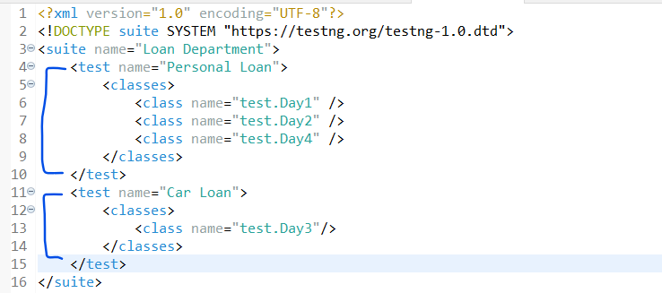
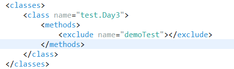
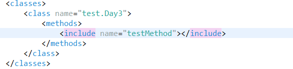
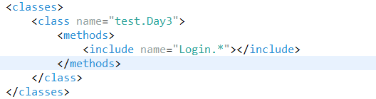
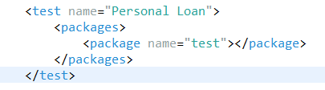
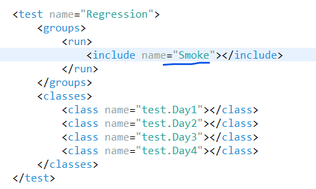
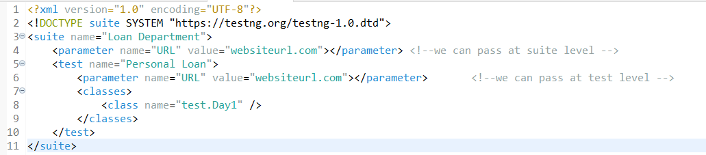
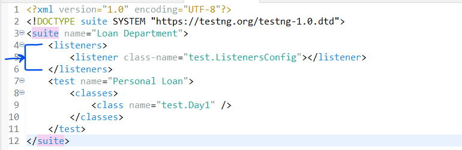

TestNG is a unit Testing framework which helps in controlling testcase execution from testng xml file , lets see the most used topics from testng in a framework
Create a Maven Project and add dependency or add testNG eclipse plugin [To check if testNG plugin is installed in eclispe go to Windows - Preferences -Search TestNg]
@Test
instead of main method of java we can use this to write test scripts in testNg we can differentiate testcases by simply using the @Test annotation , this differentiate the testcases
These are testng.xml level annotations , that is they depend on suite tag , test tag in testng.xml file
@BeforeSuite
The code inside this will run first inside a test suite
@AfterSuite
The code inside this will run after entire suite is completed
@BeforeTest
This will run before test folder
@AfterTest
This will run after test folder
These depends on class and test methods
@BeforeMethod
method annotated with this tag will run before every @Test method
@AfterMethod
method annotated with this tag will run after every @Test method
@BeforeClass
method annotated with this tag will run before anything get executed from a class
@AfterClass
method annotated with this tag will run after everything get executed from a class
Testcases will execute based on alphabetical order in testNG by default
We can control the execution using different helper attributes
Suppose we have 2 tests , HomePageTest and LoginPageTest ,HomePageTest depends on LoginPageTest Then we can specify the
@Test(dependsOnMethods= {"LoginPageTest"})
public void HomePageTest() {
//code here
}
If a method depends on multiple methods then we can use below syntax
@Test(dependsOnMethods= {"LoginPageTest","TestMethodName"})
public void HomePageTest() {
//code here
}
If we know there is a bug already reported for a test method , we can disable it
@Test(enabled = false)
public void demo() {
//code
}
If we want some testcase to wait before throwing error we can use timeOut
@Test(timeOut=4000)
public void SecondTest() {
//code
}
If we want to specify priority to test methods we can do it using @priority
We can have negative , 0 , positive value as priority , the lowest number gets highest priority
@Test(priority = 1)
public void myTestCaseWithPriority() {
try {
System.out.println("I am in my first testcase with priority=1");
} catch (Exception e) {
}
}
We can run all the test cases at a time using testng.xml - RightClick on testng.xml file ,Run as testNG Suite
we can seperate a suite into multiple test with different classes and organize our testng.xml file
We can include and exclude testcases
 We can also include test methods that start with a particular name using the regular expression
We can run whole code from a package using below syntax
We can also run testcases by tagging them
@Test(groups= {"Smoke"})
public void Demo() {
System.out.println("Hey There");
}

We can send parameters from testNG.xml file to test methods
@Parameters({"URL"})
@Test
public void Demo1(String urlName) {
System.out.println("Hey There");
System.out.println(urlName);
}

To run same testcase with multiple data sets we can use dataProvider
@Test(dataProvider = "getData")
public void loginWithMultipleIds(String username, String password) {
System.out.println(username);
System.out.println(password);
}
@DataProvider
public Object[][] getData() {
// step1: create multi dimensional array
Object[][] data = new Object[3][2];
// step2
data[0][0] = "firstusername";
data[0][1] = "password";
data[1][0] = "secondusername";
data[1][1] = "password2";
data[2][0] = "thirdusername";
data[2][1] = "password3";
// step3
return data;
}
These are listeners that will run after some testcase got failed listeners will invoke method based on if testcase is passed or failed
//step1 : create a class ListenersConifg
we have ITestListener , which is an interface that has all the methods for the testNG listeners
//step2: this class implements ITestListener
//step3: right click --> source --> override/implement methods
//step4:we must provide the Listeners class location in testng.xml file , after suite tag , before test tag

thus whatever we define inside the @Override methods will run based on test success and failure
To know which testcase is getting failed we can know using the result parameter
@Override
public void onTestFailure(ITestResult result) {
//prints failed testcase name
System.out.println("Failed testcase name is :" + result.getName());
}
we can specify parallel="tests" thread-count="2" , thread-count can be any number of testcases , test tags at the suite tag and test tag to run in parallel
TestNG also provides default reports, after executing test cases we can see the folder test-output , inside it we have index.html file,take the entire path and paste it in browser , we can see the testng generated default report